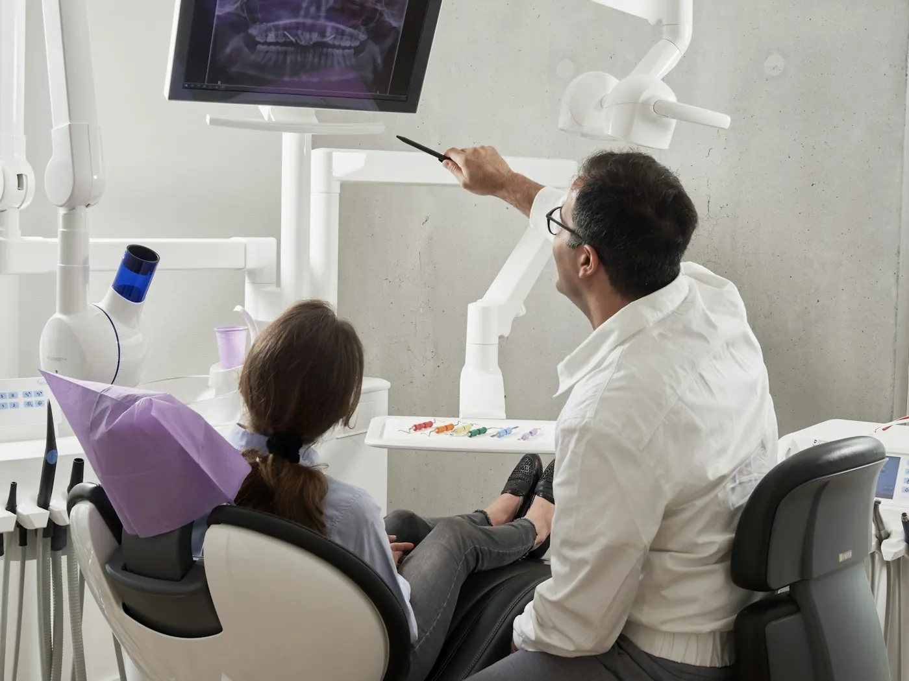
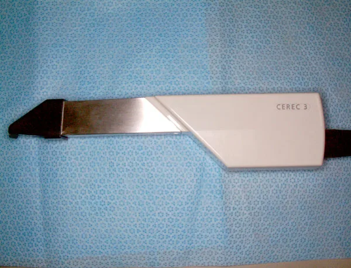
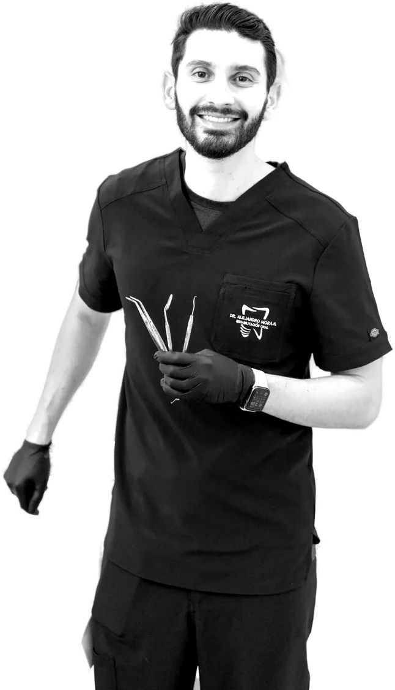
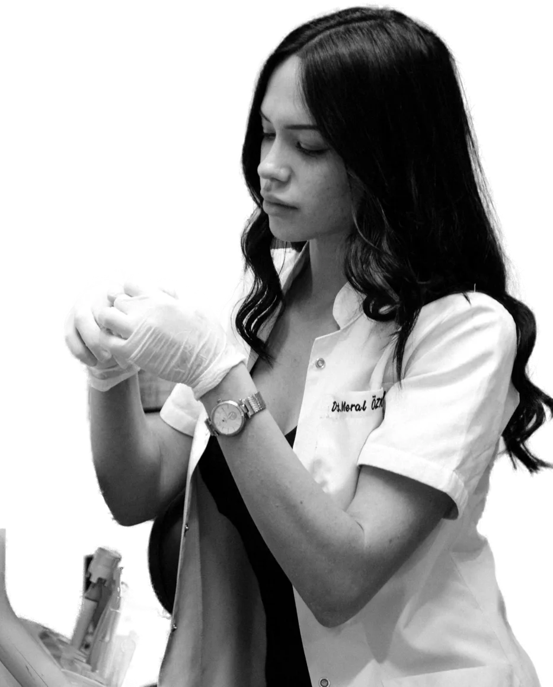

Dentista perto de você até as 22h
Unidades em:Savassi
Buritis
Contagem

quanto bonitosAvaliação grátis em 9 clínicas
de BH, abertas até as 22h.

Tecnologia de verdade
Mais rápidoOdontologia moderna:Mais simplesSem dor
Odontologia para resultados de verdade
01/ 06

Tecnologia
Time de especialistas


Profissionais preparadoscuidado de especialista com tecnologia atual
Conhecer a equipe +Estamos aqui Por que
a gente? para cuidar do seu sorriso
9unidades em BH e região
9.312avaliações nota 4,8
22habertas até tarde e aos domingos
Depoimentos

Seu sorriso novo começa aqui
© 2026 Sorriso Prime Odontologia · Responsável técnica: Dra. Helena Viana, CRO-MG fictício · Nomes e registros fictícios · Marca criada para demonstraçãoSite de exemplo feito pela Blue Rose · Fotos: Unsplash e Wikimedia Commons (créditos abaixo)